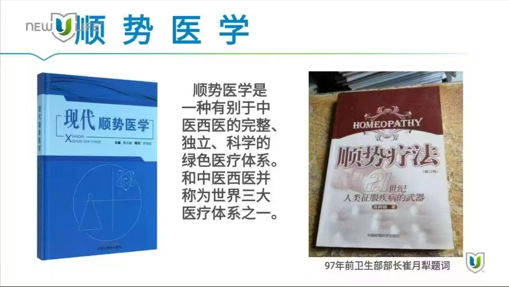

顺势医学
在我们的认知中，可能只知道中医、西医。其实呢，世界上还存在着另外一种完整的、独立的、科学的绿色医疗体系，和中医、西医并称为世界笫三大医疗体系。
而顺势疗法就是采用顺势医学的原理来治疗人们疾病的一种方法。1997年由中国环境科学出版社出版的、陈树桢编著的《顺势疗法》一书问世，前卫生部部长崔月犁亲笔题词称：顺势疗法﹣---21世纪人类征服疾病的武器！

顺势疗法是1790年，由德国医生哈里曼在欧洲创办的，已经在欧美流行了200多年。欧美的药店里，40％的都是顺势疗法产品。
顺势疗法的核心内容是以同治同。
举个例子，大家都切过洋葱吧？我们切洋葱时，会流眼泪、流鼻涕、打喷嚏，这和鼻炎的症状相似。
顺势疗法就是从洋葱里提取某种物质去治疗鼻炎，也就是用相同症状的物质去治疗相同症状的疾病，叫"以同治同"，类似于我们中医的"以毒攻毒"。
它和西医、中医不同的是：中医和西医往往会采用中剂量或大剂量的药物，去治疗疾病，而顺势疗法是采用微小剂量去治疗疾病。有多小呢？就是把一种物质放到水里去稀释震荡，再取出一部分又放到水里去稀释震荡……这样反复操作，最后就像一滴水融入到大海一样。
很多人会觉得：那不是就没有了吗？虽然外形是没有了，但它能携带一个生物信息，通过水这个介质，给到我们人体一个信号，让我们人体去恢复自愈能力！
这款小蓝瓶是涂抹在手腕上，26秒透皮吸收，10分钟进入我们的血液，然后给到我们脑垂体一个信号。
让我们的脑垂体去分泌内源性的生长激素 HGH ，也叫生长荷尔蒙，它像扫描仪一样可以自我检测，让我们 的细胞修复。
我们的皮肤细胞28天更新一遍，内脏细胞6~8个月更新一遍，达到一个代谢平衡。 HGH 能使我们的皮肤越来越有光泽，并细腻紧致，斑块会慢慢消失、法令纹变浅，我们的身体各个器官会越来越健康。
那顺势疗法是不是治疗某种疾病的呢？其实不是的。它治疗的是我们整个人。
它是利用药物的波长与我们身体受损细胞的波长相同，发生共振，去修复我们的病变组织。
所以顺势疗法的作用有：
抗感染、 抗肿瘤、 抗辐射、 抗疲劳、 抗衰老等
它的特点是：
安全、 快速、 有效、 温和、 持久、 全面、 根治。
我们这款小蓝瓶通过透皮吸收，去唤醒人们的脑垂体重新崛起，从而分泌人体所需的生长激素 HGH ,并分配到我们身体各个脏腑器官。它可以调控我们的内分泌腺，而且是双向调控，把我们体内高的激素调低，低的激素调高， 最后让我们体内的激素水平维持平衡，激活人体的自我疗愈功能。
我们脑垂体分泌的生长激素 HGH ，可以作用到我们的神经、心脏、肌肉、骨骼、皮肤、性腺、胸腺等。
到目前为止，顺势疗法是世界上最安全最有效的方法。

扫码加好友了解更多产品信息